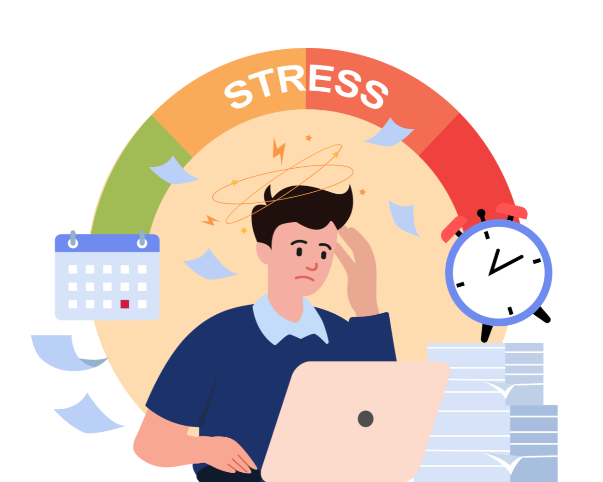
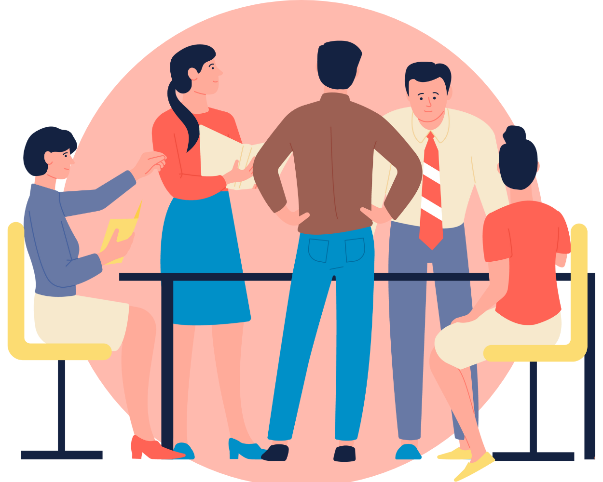
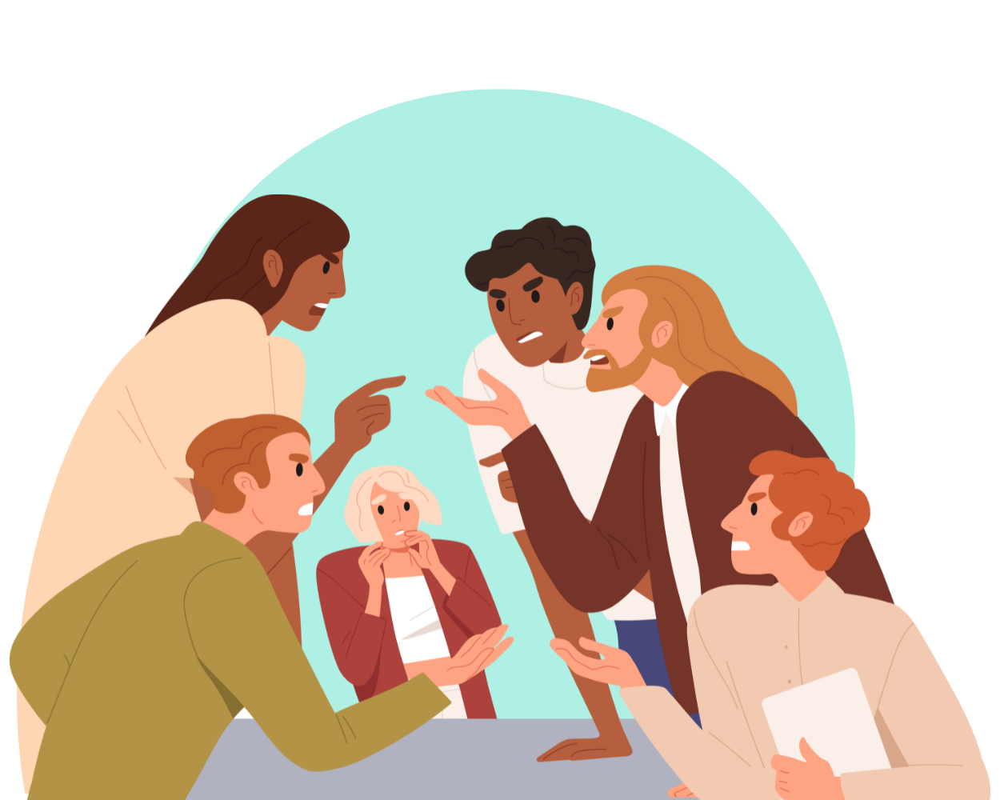
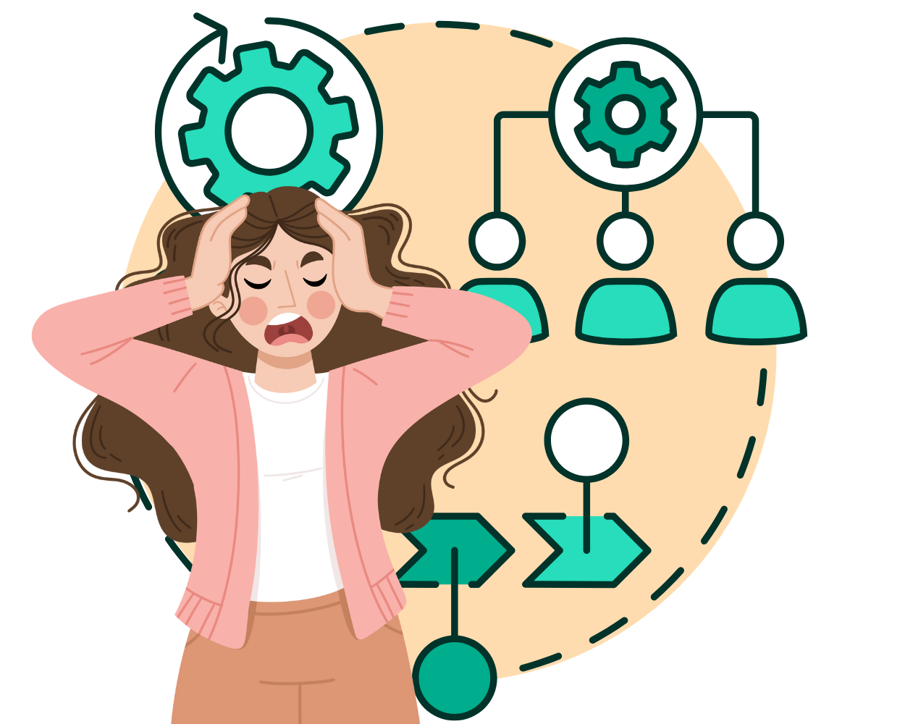

Stress och hög arbetsbelastning
När medarbetare upplever stress och känner att resurserna inte räcker till, ökar risken
för irritation och motsättningar.
Konflikter i arbetslivet
Konflikter är en naturlig del av arbetslivet och kan, om de hanteras väl, bidra till bättre lösningar och utveckling. Men när konflikter inte hanteras på ett effektivt sätt, kan de leda till problem som stress, kränkningar och försämrad arbetsmiljö.
Klicka på de gröna knapparna nedan för att läsa mer om vanliga orsaker till konflikter på arbetsplatsen:


Otydliga roller
Oklarhet kring ansvarsområden och roller kan leda till frustration och konflikter.

Orättvisa och konkurrens om resurser
Upplevd orättvisa i arbetsfördelning eller konkurrens om resurser kan skapa missnöje.

Organisationsförändringar
Omorganisationer, sammanslagningar, uppsägningar och förändringar i ledarskap kan skapa
otrygghet och oro som bidrar till konflikter.
Gruppsammansättning och organisationsklimat
Arbetsplatser med tydliga majoritets- och minoritetsgrupper, exempelvis kön, yrkesroller
eller nationaliteter, löper större risk för negativa beteenden och ökade spänningar mellan
grupperna